1 MySQL数据库基础I¶
学习目标¶
- 掌握DDL操作
- 了解mysql的约束
- 掌握DML操作
- 掌握DQL操作
- 掌握多表联查
一、数据库概述¶
1、数据库介绍¶
数据库就是==存储数据的仓库==，其本质是一个文件系统，按照特定的格式将数据存储起来，用户可以对数据库中的数据进行增加，修改，删除及查询操作。
随着互联网的高速发展，大量的数据在不断的产生，伴随而来的是如何高效安全的存储数据和处理数据，而这一问题成为了信息时代的一个非常大的问题，而使用数据库可以高效的有条理的储存数据。
- 可以结构化存储大量的数据；
- 可以有效的保持数据的一致性、完整性；
- 读写效率极高。
2、数据库分类¶
数据库又分为==关系型数据库==和==非关系型数据库==
☆ 关系型数据库¶
关系型数据库：指采用了关系模型来组织数据的数据库。
关系模型指的就是二维表格模型，而一个关系型数据库就是由二维表及其之间的联系所组成的一个数据组织。
初学阶段，我们可以先简单的讲关系型数据库理解为一个Excel表格：
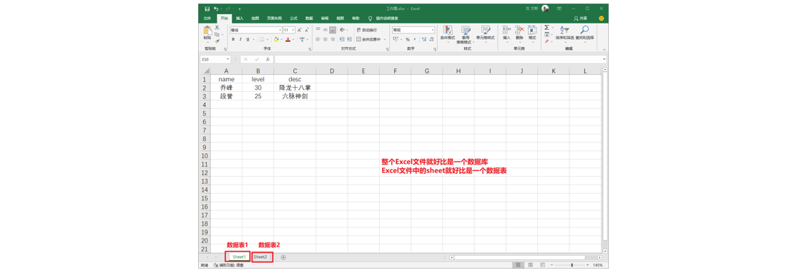
☆ 非关系型数据库NoSQL¶
非关系型数据库：又被称为NoSQL（Not Only SQL )，意为不仅仅是SQL，对NoSQL 最普遍的定义是“非关联型的”，强调 Key-Value 的方式存储数据。
Key-Value结构存储： Key-value数据库是一种以键值对存储数据的一种数据库，类似Java中的map。可以将整个数据库理解为一个大的map，每个键都会对应一个唯一的值。
关系型和非关系型数据库区别？
关系型：通过二维表维持数据关系（有行有列），大部分存储在硬盘，查询速度上关系型要慢一些，相对而言，安全性更高
非关系型：通过key:value键值对维持数据关系，大部分存储在内存，查询速度上要相对于关系型数据库更快一些，安全系数相对关系型而言不高
3、常见数据库介绍¶
☆ 关系型数据库¶
| 数据库 | 介绍 |
|---|---|
| MySQL | 开源免费的数据库，中型的数据库.已经被Oracle收购了.MySQL6.x版本也开始收费。 |
| Oracle | 收费的大型数据库，Oracle公司的产品。Oracle收购SUN公司，收购MYSQL。 |
| DB2 | IBM公司的数据库产品,收费的。常应用在银行系统中. |
| SQLserver | MicroSoft 公司收费的中型的数据库。C#、.net等语言常使用。 |
| SQLite | 嵌入式的小型数据库，应用在手机端。 |
☆ 非关系型数据库¶
| 数据库 | 介绍 |
|---|---|
| Redis | 是一个小而美的数据库，主要用在key-value 的内存缓存，读写性能极佳 |
| HBase | HBase是列式数据库，目标是高效存储大量数据 |
| MongoDB | MongoDB是文档型数据库，非常接近关系型数据库的。 |
4、小结¶
① 数据库就是存储数据的仓库，用户可以对数据库中的数据进行增删改查操作
② 数据库分为关系型数据库和非关系型数据库。
③ 常用的关系型数据库有：MySQL，Oracle，DB2，SQLserver，sqlite
④ 常用的非关系型数据库有：Redis，Hbase，MongoDB
二、MySQL数据库¶
1、MySQL介绍¶
MySQL是一个关系型数据库管理系统，在 WEB 应用方面，MySQL是最好的 RDBMS (Relational Database Management System，关系数据库管理系统) 应用软件，它是由瑞典MySQL AB 公司开发，目前属于 Oracle 旗下产品，MySQL 是最流行的关系型数据库管理系统中的一个。
2、MySQL的特点¶
MySQL是开源的，所以你不需要支付额外的费用。 MySQL支持大型的数据库。可以处理拥有上千万条记录的大型数据库。 MySQL使用标准的SQL数据语言形式。 MySQL可以安装在不同的操作系统，并且提供多种编程语言的操作接口。这些编程语言包括C、C++、Python、Java、Ruby等等。
3、MySQL版本¶
MySQL Community Server：社区版本，开源免费，但不提供官方技术支持。
MySQL Enterprise Edition：企业版本，需付费，可以试用30天。
MySQL Cluster：集群版，开源免费。可将几个MySQL Server封装成一个Server。
MySQL Cluster CGE：高级集群版，需付费。
MySQL Workbench（GUITOOL）：一款专为MySQL设计的ER/数据库建模工具。它是著名的数据库设计工具DBDesigner4的继任者。MySQL Workbench又分为两个版本，分别是社区版（MySQL Workbench OSS）、商用版（MySQL WorkbenchSE）。
本次课程，我们使用MySQL8.0版本， MySQL Community Server进行学习。
4、MySQL数据库下载与安装¶
☆ 下载¶
MySQL是开源免费的，可以直接去官网下载最新版MySQL，下载地址如下：
下载地址：https://dev.mysql.com/downloads/mysql/，拉到下面，选择 Windows 系统。
建议选择安装版进行安装，点击Go to Download Page进行安装。
点击 Download 后会跳转到如下页面，点击左下角的 No thanks, just start my download. 开始下载。
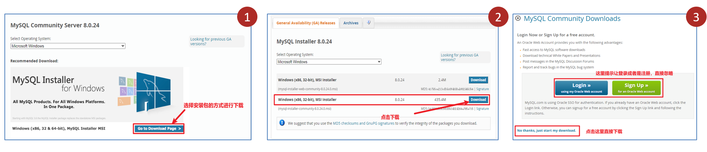
☆ 安装¶
下载完成后打开安装包，稍等片刻后，选择开发者默认的安装方式，点击下一步即可。
此后按照流程安装即可，遇到Next（下一步），和Execute（执行）直接点击即可，点击Execute后需要等待几分钟。
直至出现Account and Roles输入数据库密码，此处输入密码务必记住，用于之后登陆数据库。
继续点击Next，出现finish后点击，完成安装。
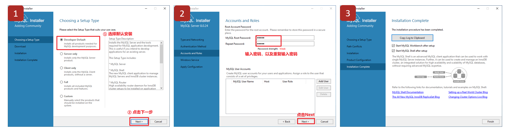
注意：MySQL软件有一个默认管理员叫做root
5、添加环境变量（Windows）¶
cmd（DOS窗口）=> 输入命令如mysql => 当前==Windows的环境变量==中去寻找
添加环境变量的目的：输入终端命令时，可以搜索对应的可执行文件。
首先找到mysql的安装目录，并且定位到mysql文件，将地址栏内容进行复制。
默认的安装路径： C:\Program Files\MySQL\MySQL Server 8.0\bin
找到此电脑右键点击选择属性，弹出如下界面，选择高级系统设置，不同版本系统位置可能不太一样，耐心寻找一下。
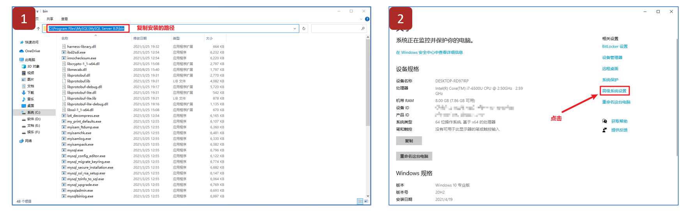
进入高级系统设置之后，点击环境变量按钮，即可进入环境变量配置界面。
找到系统变量中的path变量，点击编辑，进入编辑界面。
选择新建，将刚才的赋值的mysql文件的地址粘贴到文本框中，点击确定，完成环境变量配置。
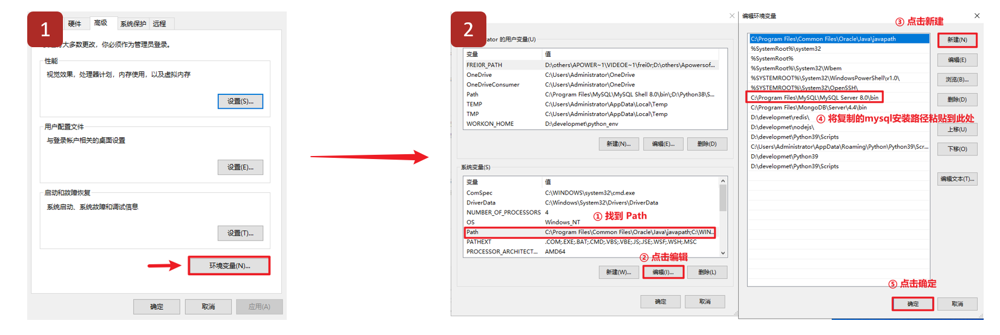
6、检测环境变量是否配置成功¶
在底部搜索栏输入cmd，按Enter键唤出终端窗口。
输入mysql -V（V要大写），输出如下内容则配置成功。
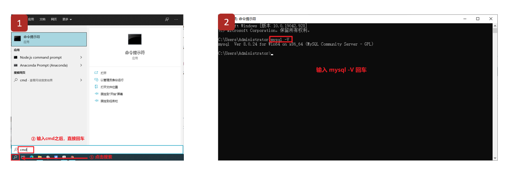
三、Linux系统下的MySQL安装与使用¶
1、MySQL安装与使用¶
课程提供的Linux系统中已经安装好了Mysql，可以无需安装，直接使用即可。
2、登陆MySQL数据库¶
MySQL是一个需要账户名密码登录的数据库，登陆后使用，它提供了一个默认的root账号，使用安装时设置的密码即可登录，目前有两种登录场景：
☆ 本地（针对本地MySQL）¶
# mysql -uroot –p 回车
password：输入密码1
案例演示：
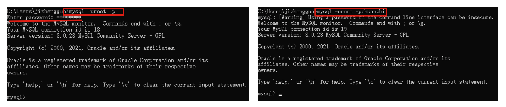
说明： -u 后面是登录的用户名 -p 后面是登录密码, 如果不填写, 回车之后会提示输入密码
☆ 远程（针对远程MySQL，MySQL服务器不再本地）¶
# mysql -h 远程服务器IP地址 -P 端口号 -u用户名 -p 回车
password：输入密码
案例：
# mysql -h 192.168.88.161 -P 3306 -uroot -p
Enter password:123456
☆ 退出¶
① mysql> exit
② mysql> quit
③ 快捷键Ctrl + d
3、小结¶
① MySQL的特点：免费，支持大型数据库，标准的SQL语言形式，跨平台。
② 课程使用的版本时MySQL8.0版本。
③ MySQL登录的两种方式：
方法一：本地 mysql -uroot -p123456
方法二：远程mysql -h 192.168.88.100 -P 3306 -uroot -p123456
④ 从MySQL软件中退出有3种方式
方法一：exit
方法二：quit
方法三：Ctrl + d
四、MySQL图形化开发工具DataGrip¶
1、DataGrip介绍¶
DataGrip是JetBrains公司推出的管理数据库的产品，功能非常强大，可以兼容各种数据库，另外,JetBrains公司还有一款知名的IDE开发工具IDEA，用户体验非常不错。
下载地址：https://www.jetbrains.com/datagrip/download/#section=windows
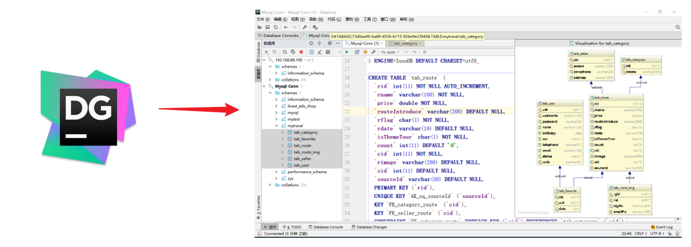
2、DataGrip安装¶
下载完成后打开安装程序，选择安装路径，一直点击Next即可安装。 直到Finish点击完成安装，并打开应用。 选择Evaluate for free 免费试用30天。
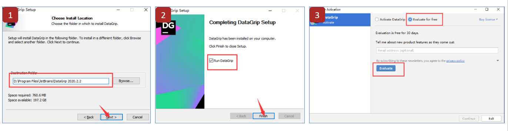
3、创建工程¶
点击File->New->Project新建DataGrip工程
输入项目名称，点击确定。
选择新项目打开方式：This Windows（在本窗口中打开），New Windows（在新窗口中打开）， Attach（附加模式）
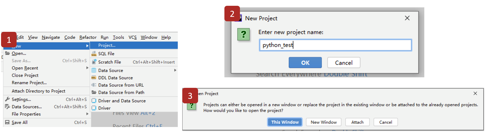
4、连接数据库¶
选择Database下的➕，点击DataSource菜单下的MySQL。 填写对应的参数，连接数据库：连接名，IP，用户名，密码等，点击OK完成连接。 注意：如果第一次使用，需要下载mysql驱动文件。
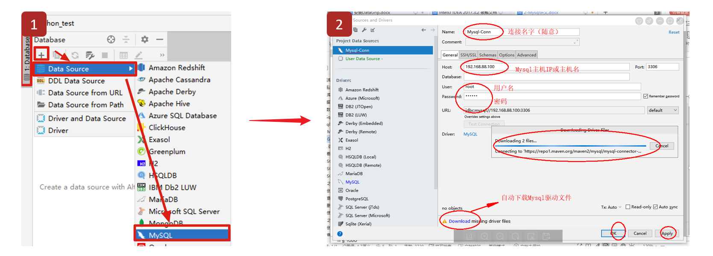
设置数据库时区：
- 点击Advanced按钮；
- 在VM options后面写入
-Duser.timezone=Asia/Shanghai，就可以啦；
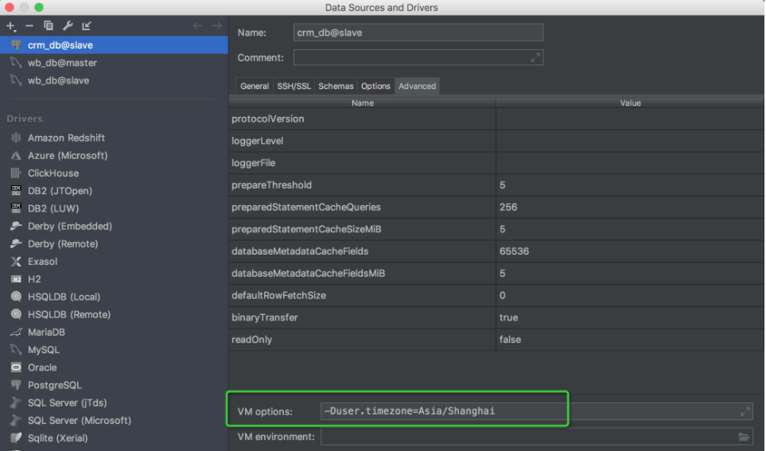
设置完成后，单击Apply（应用），单击OK，数据库就连接成功了！
5、选择要使用的数据库¶
点击连接名称之后的按钮可以选择所要使用的数据库：

6、DataGrip软件设置¶
☆ 设置字体大小¶
设置文字大小： File--->settings--->Editor---->Font
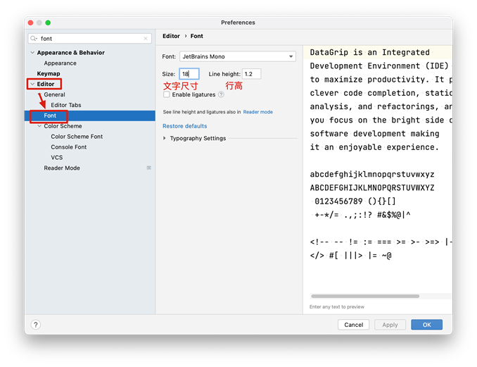
☆ 设置关键字大写¶
设置关键字大写： File--->settings--->Editor---->Code Style--->SQL--->MySql(需要设置的数据库)--->Case
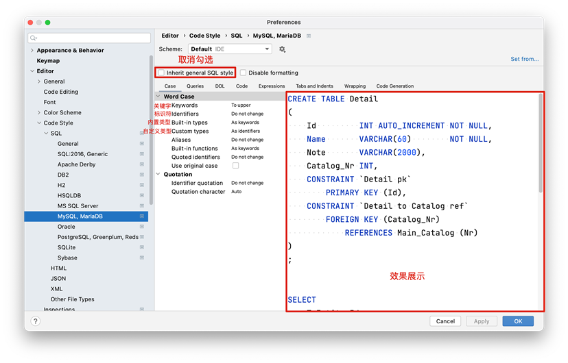
☆ 自动排版¶
自动排版布局： File--->settings--->Editor---->Code Style--->SQL--->MySql(需要设置的数据库)--->Queries 自动排版快捷键：Ctrl+ Alt + L
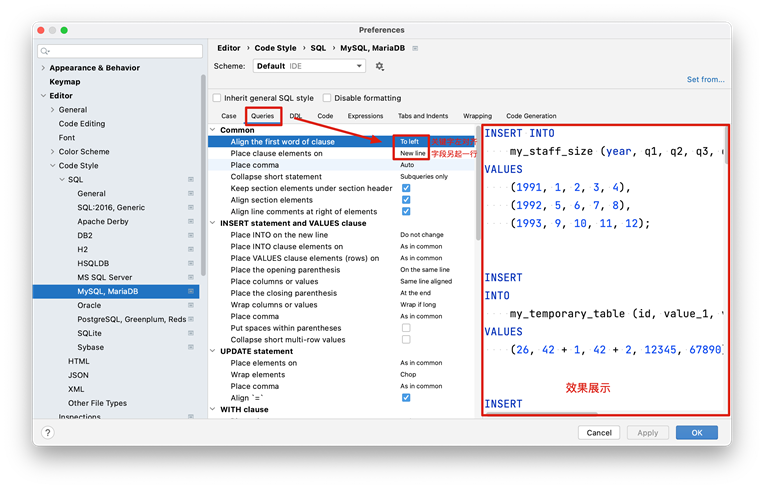
五、SQL语句¶
1、连接数据库¶
结构化查询语言(Structured Query Language)简称SQL，是关系型数据库管理系统都需要遵循的规范，是数据库认识的语句。不同的数据库生产厂商都支持SQL语句，但都有特有内容。
举例：
普通话：各数据库厂商都遵循的ISO标准。
方言：数据库特有的关键字。

2、SQL语句分类¶
☆ DDL¶
数据定义语言：简称DDL(Data Definition Language) 用来定义数据库对象：数据库，表，列等。 关键字：create，alter，drop等
☆ DML¶
数据操作语言：简称DML(Data Manipulation Language) 用来对数据库中表的记录进行更新。 关键字：insert，delete，update等
☆ DQL¶
数据查询语言：简称DQL(Data Query Language) 用来查询数据库中表的记录。 关键字：select，from，where等
☆ DCL¶
数据控制语言：简称DCL(Data Control Language) 用来定义数据库的访问权限和安全级别，及创建用户。
3、SQL基本语法¶
① SQL语句可以单行或多行书写，以分号结尾。
select * from students;
② 可使用空格和缩进来增强语句的可读性
select
*
from students;
③ MySQL数据库的SQL语句不区分大小写，关键字建议使用大写
SELECT * FROM user;
等价于
select * from user;
④ 可以使用单行与多行注释
# 单行注释
-- 单行注释，注意：--后面有一个空格
/*
...
多行注释
...
*/
4、小结¶
结构化查询语言（SQL），是关系型数据库管理系统都需要遵循的规范，。不同的数据库生产厂商都支持SQL语句，但都有特有内容。
SQL语句分为：数据定义语言（DDL），数据操作语言（DML），数据查询语言（DQL），数据控制语言（DCL）。
SQL通用语法：结构灵活，使用分号结尾；不区分大小写；可以使用/**/，#，--来进行注释。
六、DDL数据库操作¶
1、MySQL的组成结构¶
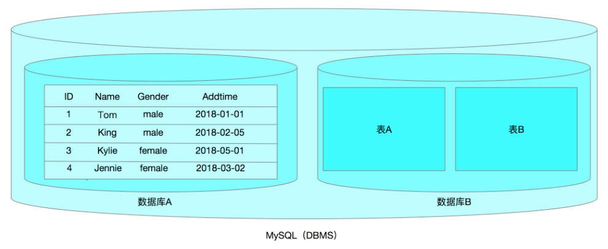
注：我们平常说的MySQL，其实主要指的是MySQL数据库管理软件。
一个MySQL DBMS可以同时存放多个数据库，理论上一个项目就对应一个数据库。如博客项目blog数据库、商城项目shop数据库、微信项目wechat数据库。
一个数据库中还可以同时包含多个数据表，而数据表才是真正用于存放数据的位置。（类似我们Office软件中的Excel表格），理论上一个功能就对应一个数据表。如博客系统中的用户管理功能，就需要一个user数据表、博客中的文章就需要一个article数据表、博客中的评论就需要一个message数据表。
一个数据表又可以拆分为多个字段，每个字段就是一个属性。
一个数据表除了字段以外，还有很多行，每一行都是一条完整的数据（记录）。
2、数据库的基本操作¶
① 创建数据库¶
普及英语小课堂：
创建 => create
数据库 => database
创建 + 数据库 = create database 数据库名称(字母+数字+下划线组成，以字母开头，不能出现中文以及特殊字符)
基本语法：
mysql> create database 数据库名称 [设置编码格式];
特别注意：在MySQL中，当一条SQL语句编写完毕后，一定要使用分号;进行结尾，否则系统认为这条语句还没有结束。
案例：创建数据库的相关案例
创建db_itheima库
create database db_itheima;
创建db1库并指定默认字符集
create database db_itheima default charset gbk;
如果存在不报错(if not exists)
create database if not exists db_itheima default character set utf8;
说明：不能创建相同名字的数据库！
扩展：编码格式，常见的gbk（中国的编码格式）与utf8（国际通用编码格式）
latin1 256个字符
国内汉字无法通过256个字符进行描述，所以国内开发了自己的编码格式gb2312，升级gbk
中国台湾业开发了一套自己的编码格式big5
很多项目并不仅仅只在本地使用，也可能支持多国语言，标准化组织开发了一套通用编码utf8，后来5.6版本以后又进行了升级utf8mb4
编写SQL语句是一个比较细致工作，不建议大家直接在终端中输入SQL语句，可以先把你要写的SQL语句写入一个记事本中，然后拷贝执行。
② 查询数据库¶
英语小课堂：
显示 => show
数据库 => database
显示 + 所有数据库 = show databases;
基本语法：显示所有数据库
mysql> show databases;
③ 删除数据库¶
英语小课堂：
删除 => drop
数据库 => database
删除 + 数据库 = drop database 数据库名称;
基本语法：
mysql> drop database 数据库名称;
案例：删除db_itheima数据库
mysql> drop database db_itheima;
④ 选择数据库¶
从数据库列表中查找需要使用的数据库
格式：
mysql> use db_itheima;
查看正在使用的数据库（8.0以后版本需要基于select查询来获取当前数据库）
mysql> select database();
3、小结¶
创建数据库：CREATE DATABASE 数据库名； 查看数据库：SHOW DATABASES; 删除数据库：DROP DATABASE 数据库名； 使用数据库：USE 数据库名；
七、DDL数据表操作¶
特别注意：创建数据表必须有一个前提，首先要明确选择某一个数据库。
1、数据表的基本操作¶
☆ 数据表的创建¶
英语小课堂：
创建 => create
数据表 => table
创建 + 数据表 = create table 数据表名称
基本语法：
mysql> create table 数据表名称(
字段1 字段类型 [字段约束],
字段2 字段类型 [字段约束],
...
);
案例：创建一个admin管理员表，拥有3个字段（编号、用户名称、用户密码）
mysql> create database db_itheima;
mysql> use db_itheima;
use在MySQL中的含义代表选择，use 数据库名称相当于选择指定的数据库。而且use比较特殊，其选择结束后，其尾部可以不加分号；但是强烈建议所有的SQL语句都要加分号，养成一个好习惯。
mysql> create table tb_admin(
id tinyint,
username varchar(20),
password char(32)
) engine=innodb default charset=utf8;
tinyint ：微整型，范围-128 ~ 127，无符号型，则表示0 ~ 255
表示字符串类型可以使用char与varchar，char代表固定长度的字段，varchar代表变化长度的字段。
案例：创建一个article文章表，拥有4个字段（编号、标题、作者、内容）
mysql> use db_itheima;
mysql> create table tb_article(
id int,
title varchar(50),
author varchar(20),
content text
) engine=innodb default charset=utf8;
text ：文本类型，一般情况下，用varchar存储不了的字符串信息，都建议使用text文本进行处理。
varchar存储的最大长度，理论值65535个字符。但是实际上，有几个字符是用于存放内容的长度的，所以真正可以使用的不足65535个字符，另外varchar类型存储的字符长度还和编码格式有关。1个GBK格式的占用2个字节长度，1个UTF8格式的字符占用3个字节长度。GBK = 65532~65533/2，UTF8 = 65532~65533/3
☆ 查询已创建数据表¶
英语小课堂：
显示 => show
数据表 => table
显示所有数据表（当前数据库）
mysql> use 数据库名称;
mysql> show tables;
显示数据表的创建过程（编码格式、字段等信息）
mysql> desc 数据表名称;
☆ 修改数据表信息¶
① 数据表字段添加¶
英语小课堂：
修改 => alter
数据表 => table
基本语法：
mysql> alter table 数据表名称 add 新字段名称 字段类型 first|after 其他字段名称;
选项说明：
first：把新添加字段放在第一位
after 字段名称：把新添加字段放在指定字段的后面
案例：在tb_article文章表中添加一个addtime字段，类型为date(年-月-日)
mysql> alter table tb_article add addtime date after content;
mysql> desc tb_article;
② 修改字段名称或字段类型¶
修改字段名称与字段类型（也可以只修改名称）
mysql> alter table tb_admin change username user varchar(40);
mysql> desc tb_admin;
仅修改字段的类型
mysql> alter table tb_admin modify user varchar(20);
mysql> desc tb_admin;
③ 删除某个字段¶
mysql> alter table tb_article drop 字段名称;
mysql> desc tb_article;
④ 修改数据表名称¶
rename table 旧名称 to 新名称;
☆ 删除数据表¶
英语小课堂：
删除 => drop
数据表 => table
mysql> drop table 数据表名称;
2、字段类型详解¶
① 整数类型
| 分类 | 类型名称 | 说明 |
|---|---|---|
| tinyint | 很小的整数 | -128 ~ 127 |
| smallint | 小的整数 | -32768 ~ 32767 |
| mediumint | 中等大小的整数 | -8388608 ~ 8388607 |
| int(integer) | 普通大小的整数 | -2147483648 ~ 2147483647 |
② 浮点类型
浮点类型（精度失真情况）和定点类型（推荐使用定点类型）
| 分类 | 类型名称 |
|---|---|
| float | 单精度浮点数 |
| double | 双精度浮点数 |
| decimal(m,d) | 定点数，decimal(10,2) |
decimal(10,2) ：代表这个数的总长度为10 = 整数长度 + 小数长度，2代表保留2位小数
③ 日期类型
| 份额里 | 类型名称 |
|---|---|
| year | YYYY 1901~2155 |
| time | HH:MM:SS -838:59:59~838:59:59 |
| date | YYYY-MM-DD 1000-01-01~9999-12-3 |
| datetime | YYYY-MM-DD HH:MM:SS 1000-01-01 00:00:00~ 9999-12-31 23:59:59 |
| timestamp | YYYY-MM-DD HH:MM:SS 19700101 00:00:01 UTC~2038-01-19 03:14:07UTC |
④ 文本
| 类型名称 | 说明 |
|---|---|
| char(m) | m为0~255之间的整数定长（固定长度） |
| varchar(m) | m为0~65535之间的整数变长（变化长度） |
| text | 允许长度0~65535字节 |
| mediumtext | 允许长度0~167772150字节 |
| longtext | 允许长度0~4294967295字节 |
八、DML数据操作语言¶
1、DML包括哪些SQL语句¶
insert插入、update更新、delete删除
2、数据的增删改（重点）¶
英语小课堂：
增加：insert
删除：delete
修改：update
☆ 数据的增加操作¶
基本语法：
mysql> insert into 数据表名称([字段1,字段2,字段3...]) values (字段1的值,字段2的值,字段3的值...);
特别注意：在SQL语句中，除了数字，其他类型的值，都需要使用引号引起来，否则插入时会报错。
第一步：准备一个数据表
mysql> use db_itheima;
mysql> create table tb_user(
id int,
username varchar(20),
age tinyint unsigned,
gender enum('男','女','保密'),
address varchar(255)
) engine=innodb default charset=utf8;
unsigned代表无符号型，只有0到正数。tinyint unsigned无符号型，范围0 ~ 255
enum枚举类型，多选一。只能从给定的值中选择一个
第二步：使用insert语句插入数据
mysql> insert into tb_user values (1,'刘备',34,'男','广州市天河区');
mysql> insert into tb_user(id,username,age) values (2,'关羽',33);
第三步：批量插入多条数据
mysql> insert into tb_user values (3,'大乔',19,'女','上海市浦东新区'),(4,'小乔',18,'女','上海市浦东新区'),(5,'马超',26,'男','北京市昌平区');
☆ 数据的修改操作¶
基本语法：
mysql> update 数据表名称 set 字段1=更新后的值,字段2=更新后的值,... where 更新条件;
特别说明：如果在更新数据时，不指定更新条件，则其会把这个数据表的所有记录全部更新一遍。
案例：修改username='马鹏'这条记录，将其性别更新为男，家庭住址更新为广东省深圳市
mysql> update tb_user set gender='男',address='广东省深圳市' where username='马鹏';
案例：今年是2020年，假设到了2021年，现在存储的学员年龄都差1岁，整体进行一次更新
mysql> update tb_user set age=age+1;
☆ 数据的删除操作¶
基本语法：
mysql> delete from 数据表名称 [where 删除条件];
案例：删除tb_user表中，id=1的用户信息
mysql> delete from tb_user where id=1;
delete from与truncate清空数据表操作
mysql> delete from 数据表;
或
mysql> truncate 数据表;
delete from与truncate区别在哪里？
- delete：删除数据记录
- 数据操作语言（DML）
- 删除大量记录速度慢，只删除数据，主键自增序列不清零，100 => 新插入 => 101
- 可以带条件删除
- truncate：删除所有数据记录
- 数据定义语言（DDL）
- 清里大量数据速度快，主键自增序列清零, 100 => 新插入 => 1
- 不能带条件删除